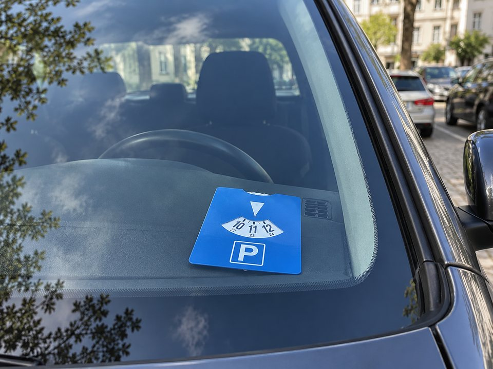
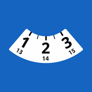

Bienvenue sur Disque Bleu
L'application qui vous indique sur quelle heure régler votre disque, en Suisse et dans six autres pays d'Europe.


L'application qui vous indique sur quelle heure régler votre disque, en Suisse et dans six autres pays d'Europe.
L'application calcule l'heure à régler sur votre disque. Elle vous indique aussi jusqu'à quand vous pouvez rester.
Une notification vous prévient quelques minutes avant la fin de votre temps de stationnement. Vous pouvez choisir ce délai dans les réglages.
La carte affiche les places en zone bleue autour de vous ou dans une autre ville. Elle montre aussi où votre voiture est garée.
Les règles du disque changent d'un pays à l'autre : durée, horaires et jours fériés. L'application applique celles du pays choisi.
Calculée selon la règle du pays, arrondi compris.
Depuis 1.0.0Midi suisse, pause déjeuner, doubles plages, périodes nocturnes.
Depuis 1.0.0Nationaux et régionaux, selon le canton, la région ou le Land sélectionné.
Mise à jour 2.0.3Une notification est envoyée avant la fin du stationnement, au délai choisi.
Depuis 1.0.0Repérez les places à proximité, gardez vos favorites et lancez l'itinéraire dans votre application de navigation.
Depuis 1.0.0Sur iPhone, le temps restant s'affiche sur l'écran verrouillé, dans la Dynamic Island et via un widget.
Depuis 2.0.0La durée se règle de 5 minutes à 12 heures et 59 minutes. L'heure et le jour restent modifiables.
Depuis 2.0.1La position de votre véhicule est mémorisée quand vous vous garez. Vous pouvez également ajouter une photo de repère, le niveau, le numéro de place ou une note.
Améliorée en 2.1.1Signalez une place disparue ou mal renseignée. Après relecture, la correction repart vers les contributeurs d'OpenStreetMap et profite à tout le monde.
Depuis 2.1.1Sur tablette et téléphone pliable, l'application s'affiche en deux panneaux côte à côte.
Depuis 3.0.0
C'est une aide au conducteur. Le disque officiel doit rester apposé derrière le pare-brise, visible depuis l'extérieur.
Ajout des Pays-Bas. Interface optimisée pour les téléphones pliables Android et les tablettes, avec une disposition à deux panneaux sur les grands écrans. Amélioration du calcul des horaires de stationnement.
Correction de l'affichage des notifications sur Android : l'alerte avant l'échéance n'apparaissait pas sur tous les appareils.
Ajout de l'Italie, de la Belgique et du Luxembourg, avec leurs règles de stationnement et leurs jours fériés. Ajout de la carte communautaire pour signaler ou proposer une place à destination d'OpenStreetMap. « Mon véhicule » permet désormais d'ajouter une photo de repère, le niveau, le numéro de place et une note, conservés sur l'appareil.
Vérification des 44 subdivisions alors couvertes, correction des jours fériés dans onze cantons suisses et affichage des prochains jours fériés au-delà de l'année en cours.
Présentation de Disque Bleu dans Mes Échéances sur iPhone, mise à niveau de la compatibilité Android et amélioration de l'ouverture des applications de navigation.
Ajout d'un sélecteur à deux roues pour définir librement la durée du stationnement, de 5 minutes à 12 heures et 59 minutes.
Ajout du temps restant sur l'écran verrouillé, dans la Dynamic Island et dans un widget. Ces affichages sont disponibles dans les quatre langues de l'application.
Fin de la bêta allemande. Ajout de la Brötchentaste pour les arrêts de 30 minutes, suggestion du pays selon la position et détection automatique des zones bleues à proximité.
L'application « Disque Bleu Suisse » devient « Disque Bleu ». Ajout d'un parcours d'accueil en allemand et traduction complète des noms des Länder.
Ajout des règles allemandes, des seize Länder et de leurs jours fériés régionaux. Cette prise en charge est initialement proposée en bêta.
Fin de la bêta française, ajout des jours fériés spécifiques à l'Alsace-Moselle, localisation des noms et adaptation de l'interface aux petits écrans.
Ajout des règles françaises, de la pause déjeuner, des jours fériés et du cas particulier de l'Alsace-Moselle.
La position du véhicule reste disponible après l'expiration du disque et le redémarrage de l'application. Ajout d'un rappel indiquant que l'application ne remplace pas le disque physique.
Calcul des règles suisses, compte à rebours, alertes, quatre langues, cantons et jours fériés, mémorisation de la position du véhicule et recherche de zones bleues à proximité.

L'app coûte 3 CHF. Une amende, au moins 40.